How to start
EasyParallelScene is a simple but powerful asset/tool that enables developers to seamlessly manage multiple scenes running in parallel to each other. With this tool, you can run multiple scenes in the same world space without any interactions between them. It also allows you to switch between scenes easily, bringing a selected scene in front while keeping the other scenes running in the background (in parallel) and invisible to the player.
How to setup this in your own game or application, will be explained in the following.
How does EasyParallelScene work
In short, EasyParallelScene uses the layer ability of Unity. By assigning a unique layer per scene to its gameobjects, it is possible to use separate cameras to render the gameobjects independently and keep their colliders and physics isolated from one another. This allows to have multiple scenes without any interference or conflicts between those. While allowing to maintain the continuity of the gameplay of each scene without interrupting the player's experience. Additionally, it is efficient, as it avoids unnecessary rendering and physics calculation, thus improving performance.
Layer and Tags
To understand how EasyParallelScene works, lets shortly have a look at the Layer and Tags itself.
Layer
In general in Unity, Layers are a way to separate different gameobjects into groups. Each gameobject in Unity can be assigned to a specific layer, which allows for finer control over their interactions, rendering, and visibility. The built-in layer system includes predefined layers like "Default", "TransparentFX", "Ignore Raycast", etc., but you can also create custom layers to fit your specific needs. Layers can be used in conjunction with cameras, physics, and scripting to achieve desired effects in your scene.
Layer settings can be accessed via main menu: Edit > Project Settings, selecting the Tags and Layers category.
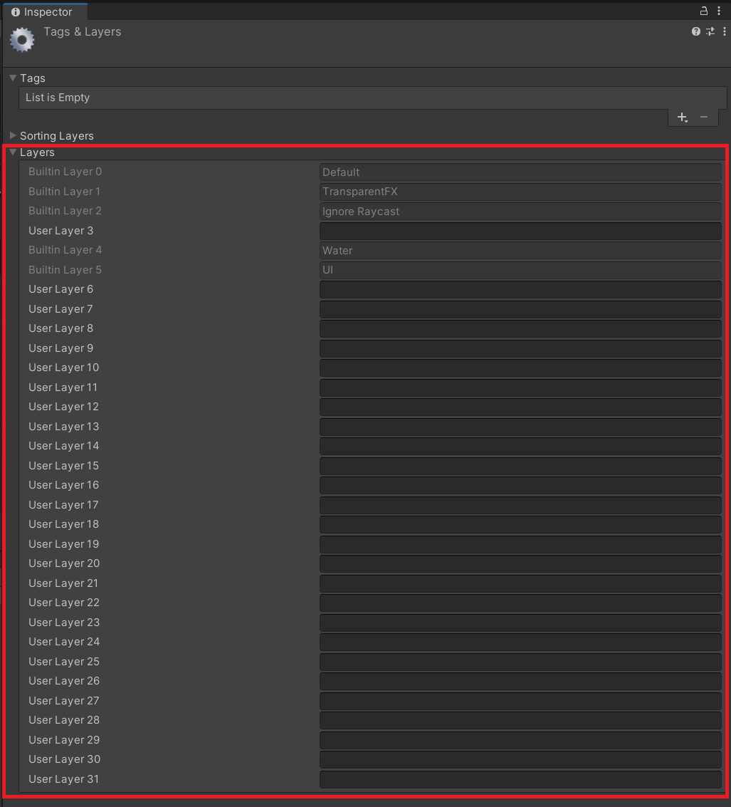
(See more https://docs.unity3d.com/Manual/class-TagManager.html#Layers)
Tag
In Unity, tags are string labels that can be assigned to gameobjects. These labels allow you to identify and categorize gameobjects in your scene, and can be used to filter objects for various purposes such as scripting, physics, and rendering.
Tags can be created and assigned to game objects in the Unity Editor, and they can be used to distinguish between different types of objects, such as enemies, collectibles, and obstacles, in your scene. This can be helpful for writing code that needs to interact with specific groups of objects, such as applying damage to all enemies or finding all collectible objects in a scene.
Tag settings can be accessed via main menu: Edit > Project Settings, selecting the Tags and Layers category.
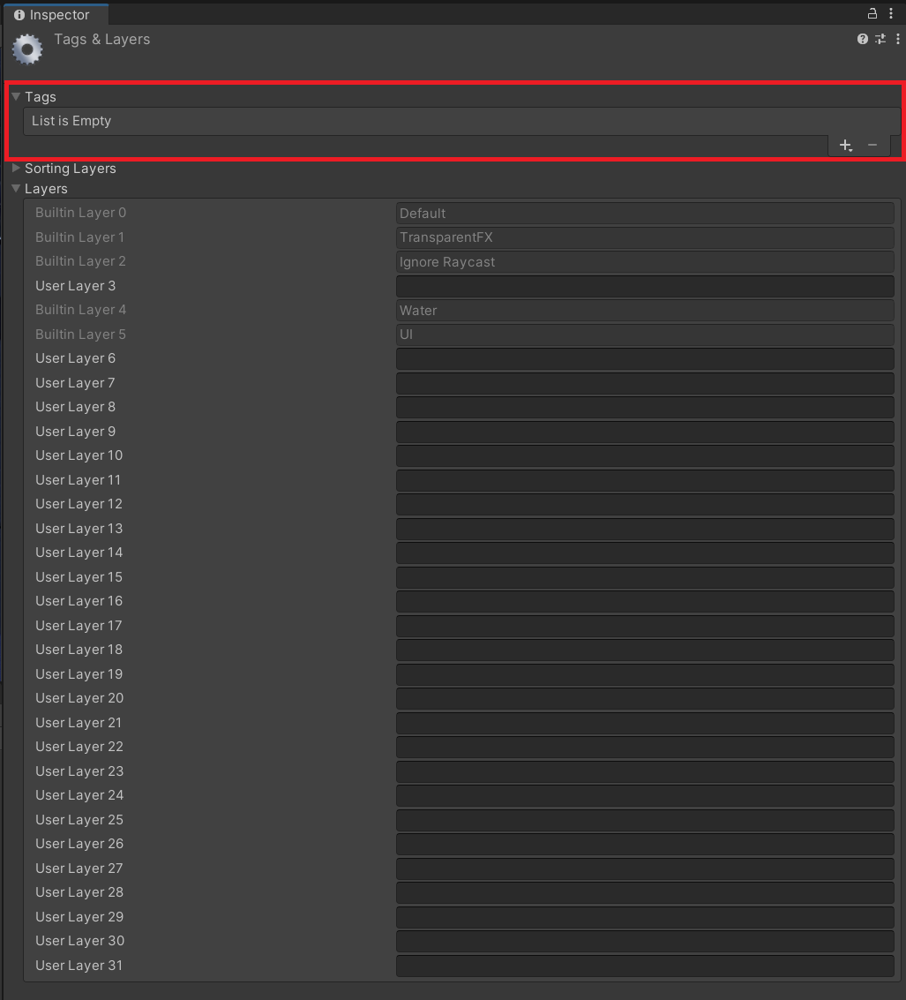
(See more https://docs.unity3d.com/Manual/class-TagManager.html#Tags)
Layer in EasyParallelScene
EasyParallelScene is based on Unity's built in layer system. Each parallel scene, and so its gameobjects, receives a unique layer. This allows to separate in front and back scenes, by rendering only the scene and gameobjects to the Player with the specific layer you want to have in front.
In the meantime the layers of the back scenes continue to react independently on their own. To ensure this system operates smoothly, it is necessary to properly set up the cameras, collision layers, and lighting.
Once assigned, you can switch between those scenes, by bringing a different layer in front (render it).
Tag in EasyParallelScene
As the layers are no longer available for custom distinction between gameobjects, it is recommended to use tags instead. For instance, you could apply a "Player" tag to the player gameobject, or an "Enemy" tag to the enemy gameobject. This will allow you to effectively differentiate and categorize your gameobjects, even if they share the same layer.
Camera
In Unity, the camera is an essential part of any project, as it determines what the player or user sees in the game or application. This seeing or rendering is achieved through the use of a camera component, which is attached to a gameobject in the scene. Which gameobjects will be rendered, can be defined by modifiy the camera components culling mask.
To use the camera culling mask, you can set the "Culling Mask" property of the camera component in the Inspector window. The culling mask is a bitmask that determines which layers the camera should render. By checking one or multiple layers, the gameobjects included in this checked layer mask, will be visible to the player.
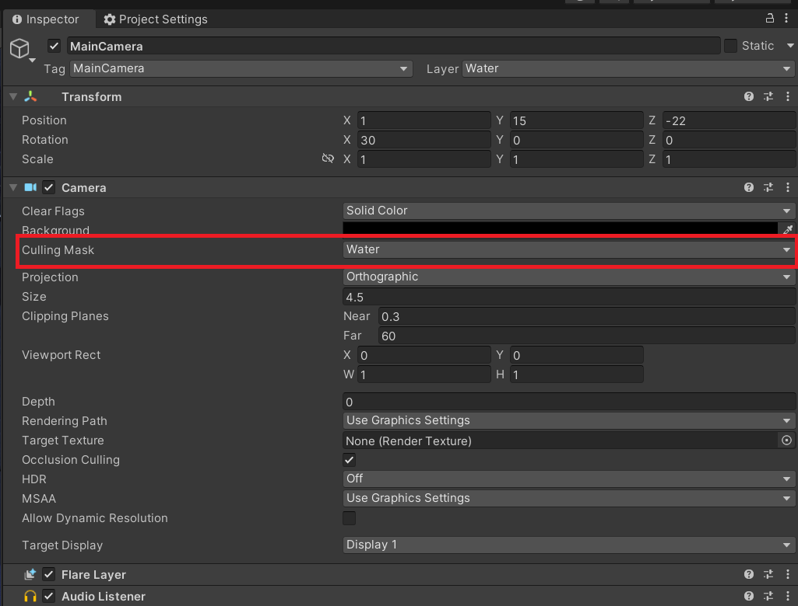
(See more https://docs.unity3d.com/ScriptReference/Camera.html)
Camera in EasyParallelScene
The EasyParallelScene utilizes the layer system in Unity by assigning each scene its own distinct layer and corresponding camera. This allows for the control of scene visibility for the player. To achieve this, it is necessary to have at least one camera per scene, with the culling mask matching the scene layer, and to assign all gameobjects within that scene to this same scene layer. For best results, it is recommended to create a custom layer for each scene, ensuring proper organization and control over scene visibility.
The camera in Unity serves not only as a renderer, but also as component for capturing mouse clicks or touch inputs. This means, only objects visible by the camera and whose layer mask overlaps with the camera's event mask will be able to receive OnMouseXXX events. To properly function in EasyParallelScene, it is necessary to not only set the culling mask, but also the event mask to the specific layer of the scene. This ensures that the proper scene in front, will respond to player inputs and interactions.
For your comfort, this all automatically happens in the background, while switching scenes. But, if you would like to use the EasyParallelScene approach in you very first scene. You have to do this setup manually.
For the demo scene "Game" this would look like the following. First you need to assign the layer to the "ParallelScene":
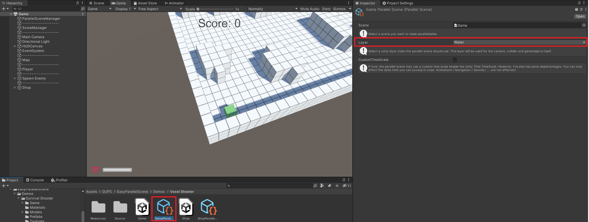
Next you setup the Camera rendering, by assigning the same layer to the "CullingMask":

Also you have to assign the "ParallelScene" layer to the existing gameobjects in this scene:

And that's it.
Collision
Next to the camera, the collision setup is important. Because you do not want different scenes with different layers, in the same world space, to interact with each other without being visible for the player.
In general, the Unity collision layers play a crucial role in defining how objects in a scene interact with each other. They determine whether objects should collide or pass through each other, and are responsible for the behavior of Physics2D and Physics3D components in the scene.
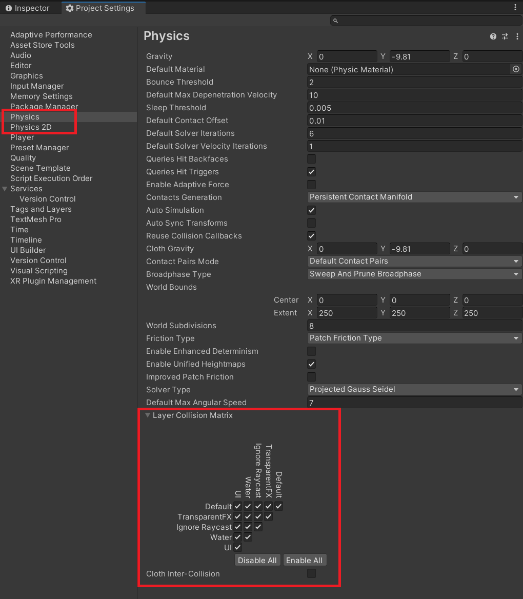
(See more https://docs.unity3d.com/ScriptReference/Collider.html)
Collision in EasyParallelScene
The setup for the EasyParallelScene is simple and straightforward. To ensure that the different scenes in the world space do not interact with each other, you just need to configure the layers to only collide with themselves. This way, each scene will only respond to collisions within its own layer, allowing for proper separation and control.
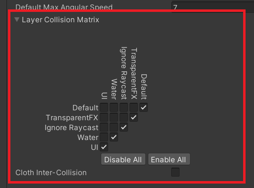
Lightning
In Unity, there are several lighting components that you can use to create a more realistic and immersive environment for your game or application. Some of the main lighting components in Unity include:
Light sources: There are several types of light sources in Unity, including directional lights, point lights, spot lights, and area lights. Each type of light source has its own unique properties, such as direction, range, and intensity.
Reflections: Reflections in Unity can be created using reflective shaders, reflection probes, and planar reflections. Reflections can add a level of detail and realism to objects and surfaces in the scene, especially those with reflective materials like metal or water.
(See more https://docs.unity3d.com/ScriptReference/Light.html and https://docs.unity3d.com/Manual/class-ReflectionProbe.html)
Lightning in EasyParallelScene
Aside from the camera and collision setup, the proper configuration of lighting is also important. To ensure that the scenes in the background do not affect the lighting in the front scene that is currently visible to the player, you want to avoid strange lights, shadows, or reflections from messing into the player's view.
Setting up the lighting in your scene is much like configuring the cameras. To make sure that lighting is only rendered when it is required, you will need to adjust the culling mask.
You need to do so for the lights:
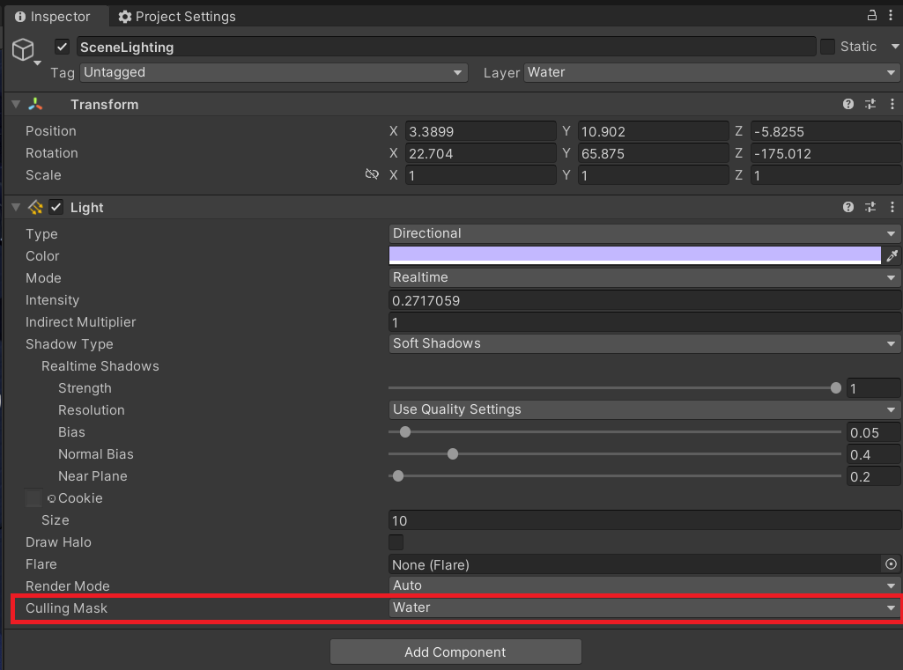
And for the reflections:
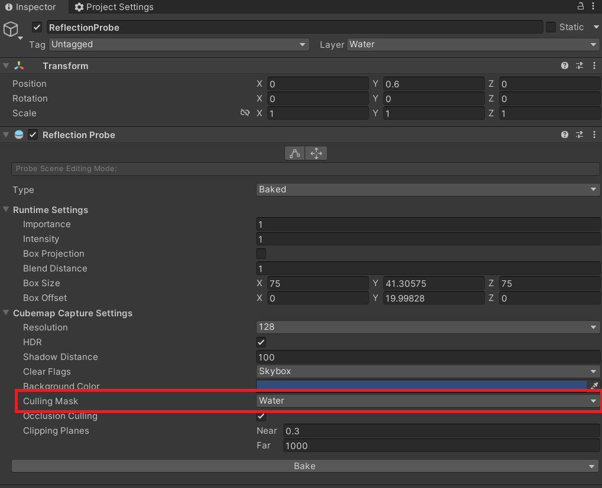
How to setup EasyParallelScene with example
After understanding the basics, we will setup an example, which is also included in this asset/tool as demo. You can find it at: "Assets\GUPS\EasyParallelScene\Demos\Voxel Shooter"
Setup the Layers
The first thing to do is, find or create individual layers for each scene. In this example, I will just use the "Water" and "UI" layers because they are fixed and available in all projects, to make the demo work:
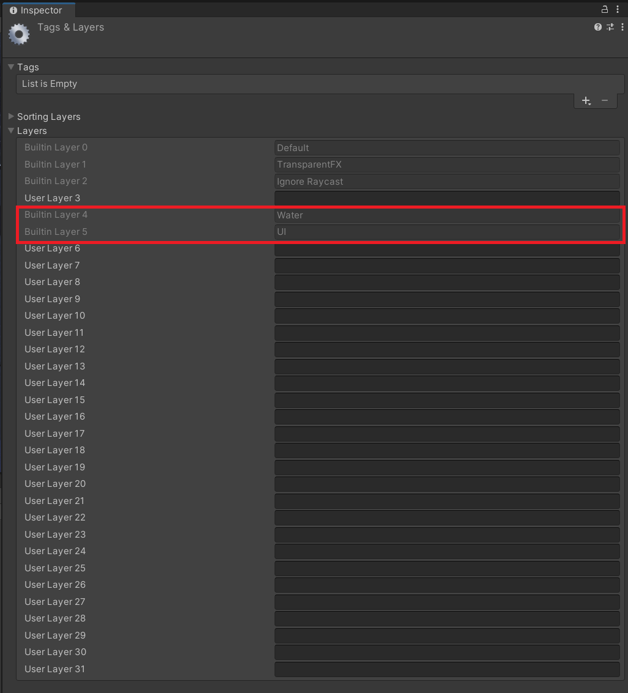
Setup the ParallelScenes
Next you need to create a ParallelScene for each of your game scenes. To do so, press right click anywhere in your project (I do it in Assets\GUPS\EasyParallelScene\Demos\Voxel Shooter, because there are the demo scenes located) and Create->GUPS->EasyParallelScene->ParallelScene. Give it a nice name (here "GameParallelScene"):
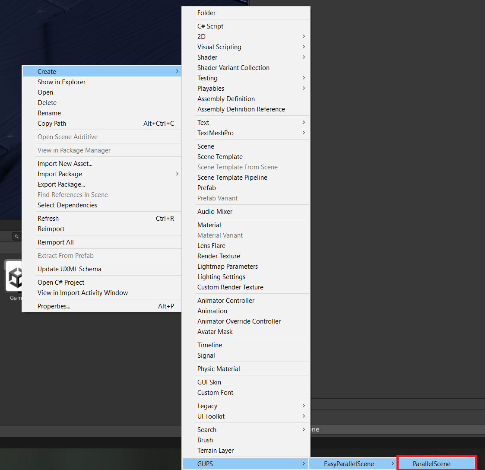
Open the file in the inspector and assign your layer from the first step. Do this for all your others scenes:

You can also define a custom TimeScale for the scene, independent from the Unity Time.TimeScale allowing you a custom DeltaTime. But the drawback is, this DeltaTime only works for scripts and not in Unity default components. This means, physics or nav mesh agents will still use the Unity Time.TimeScale based DeltaTime:
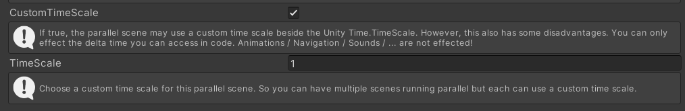
Once finished, next you have to setup the layer of the gameobjects in the scenes itself (But only if it is your first scene. EasyParallelScene will take of this work for you, if you switch to a scene using the ParallelSceneManager). Open your scene, select the scene gameobjects and assign the layer:
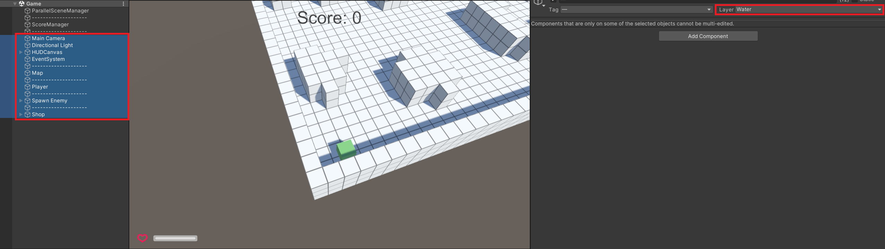
Note: Instantiating or moving gameobjects directly into a ParallelScene is also possible using the ParallelSceneManager. This gameobject and all its children will then automatically receive the correct layer settings.
/// <summary>
/// Clones the GameObject _Original and returns the clone.
/// When you clone a GameObject or Component, all child objects and components are also cloned with their properties set like those of the original object.
/// This cloned GameObject will then be moved to the _ParallelScene.
/// </summary>
/// <param name="_Original">GameObject to clone.</param>
/// <param name="_Position">Position for the cloned GameObject.</param>
/// <param name="_Rotation">Rotation for the cloned GameObject.</param>
/// <param name="_ParallelScene">Move cloned object to.</param>
/// <returns></returns>
public GameObject Instantiate(GameObject _Original, Vector3 _Position, Quaternion _Rotation, ParallelScene _ParallelScene)
The next important step is, to setup your scene camera, to render only the scene layer. To do so, open your camera and assign the culling mask (Like with the gameobjects, this is only required for your first scene, if not loaded via the ParallelSceneManager):
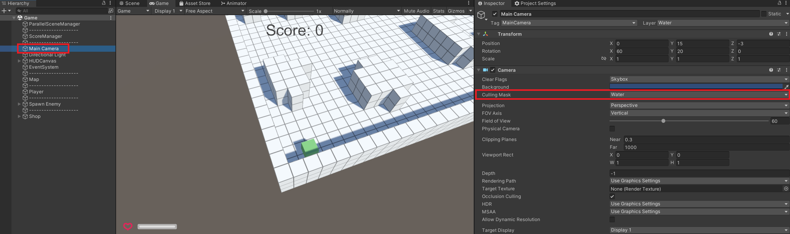
Setup the ParallelSceneManager
Once you are done, creating the ParallelScenes you need to create the ParallelSceneManager gameobject. The ParallelSceneManager controls the whole loading, switching and unloading of scenes. Create a new gameobject in your start scene, assign the ParallelSceneManager script and assign in the list below all ParallelScenes, to make them available in game.
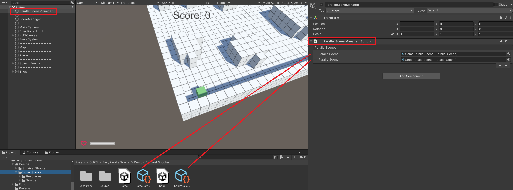
Load ParallelScenes
Now when starting your game you will only see your starting scene. To load a ParallelScene next to it in the back, you have to use the ParallelSceneManager. Call the method "Load" and wait until the scene is done loading.
/// <summary>
/// Load a _ParallelScene either Single or Additive (Parallel) to the current Scenes.
/// Note that this function behaves the same as SceneManager.LoadSceneAsync meaning that the load does not happen immediately.
/// This behavior also means that the Scene that is returned has its state set to Loading.
/// </summary>
/// <param name="_ParallelScene">The Scene to load.</param>
/// <param name="_LoadSceneMode">The loading mode. Either Single or Additive (Parallel).</param>
/// <param name="_LoadGameObjectsFlags">Decide how to load the GameObjects in the loading Scene.</param>
/// <returns>Returns the loading Scene async operation.</returns>
/// <exception cref="ArgumentNullException"></exception>
/// <exception cref="Exception"></exception>
public AsyncOperation Load(ParallelScene _ParallelScene, LoadSceneMode _LoadSceneMode, ELoadGameObjectFlag _LoadGameObjectsFlags)
Switch ParallelScenes
To finally switch between the newly loaded and the current scene, you can use the ParallelSceneManager and call the "SwitchTo" method.
/// <summary>
/// Switch to a loaded ParallelScene and set it as active Scene. If the scene is not loaded yet, returns false.
/// </summary>
/// <param name="_ParallelScene">Pass a ParallelScene to switch to.</param>
/// <param name="_SwitchSceneFlag">Manage the Scene switching.</param>
/// <param name="_PauseCurrentScene">Pause the active scene.</param>
/// <returns>Returns if the switching was successful.</returns>
public bool SwitchTo(ParallelScene _ParallelScene, ESwitchSceneFlag _SwitchSceneFlag, bool _PauseCurrentScene)
That's mostly all you need to know to start. Sure there are many helper methods or extensions to make the usage of EasyParallelScene very easy to use. To learn more, just look around in the attached demo and its code. If you like the solution, give it a try. Suggestions for improvement are sure always welcome.